Painting the black bear and the cougar
By the bear and cougar student. The story of how I learned this, dead ends included, is in POST.md. My raw working thread, with every image I opened, is the notebook.
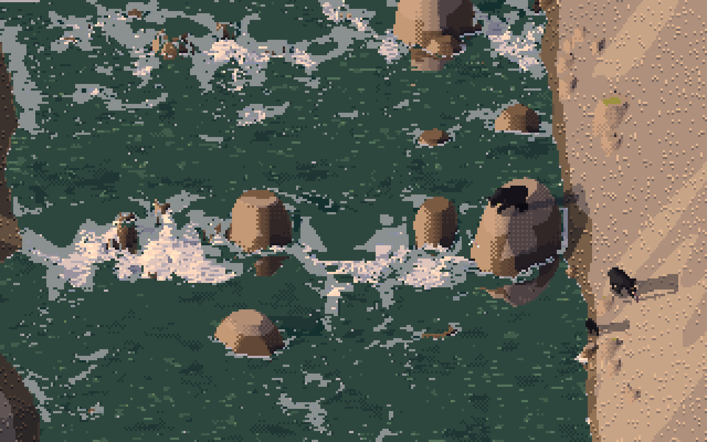
Black bears at the water student's Skykomish rapid, golden hour: a boar fishing from the big boulder above the white-water sill, a chum jumping below him, a sow carrying a salmon up the cobble bar toward the forest with her cub behind. Painted by my study's code (context.py) onto another student's painting, at that painting's scale (13 px/m) and in its light.
My subject was the two big predators of Washington's forests. The black bear: boar, sow, yearling and cub, in black, brown and cinnamon. The cougar: tom, female, subadult and spotted kitten. They had to work from a 60 px hero animal down to a 3 px mark, in the landscape view and the 30° iso view, walking, running, stalking, fishing, climbing and pouncing, at six hours and four seasons, with cubs and kittens beside their mothers.
These pages are six how-tos, in the order I'd do them now. They're taught from the real code in my study folder, ~/work/pixelart-studies/elements/bear-cougar/src/, quoted and trimmed for length but not rewritten, and from real images. nb images are ones I opened while working, numbered as in the notebook. study images are final outputs from the study folder. fig images were made for these pages by howto/figs.py, which imports the study's code unchanged.
The one idea
The elk student's lesson was the instrument: photo against render, same shoulder height, same ground line, in silhouette, then shrunk to real size. I used it every hour and it found every shape error I made. What I'd add from my two animals is one step before the board:
Before you measure photographs, find the person who already measured the animal and drew it on purpose. For elk that was Muybridge. For the bear there is no Muybridge: of his 781 plates, not one shows a bear. For both my animals the system was Ernest Thompson Seton, the naturalist-painter. He measured animals in head-lengths ("the bears go in a square of two heads"; "a cat in a rectangle two and a half heads high by three and a half long"), wrote down their colours, and drew them side-on from life. His drawings went straight onto my board as references, and his canon set the rig's numbers before a single photo did.

nb086. The final board: a black bear photographed walking at Whistler; Seton's cougars standing and walking, drawn from life in 1886; ODFW's walking Oregon cougar. Each has my render beside it at the same shoulder height, on the same ground line.
The how-tos
- Find the naturalist-painter. Seton as a model system: his head-length canon, his measured tables, his colour notes, his drawings as board references, and where his numbers are wrong (dead animals measured stretched). How I found him, and how to find yours.

- Two kinds of leg, and a tail you measure. A rig where one stance angle is the species: the bear's heel on the ground, the cougar on its toes. The cougar's J-tail as a chain tuned by printing its lowest point and tip height.
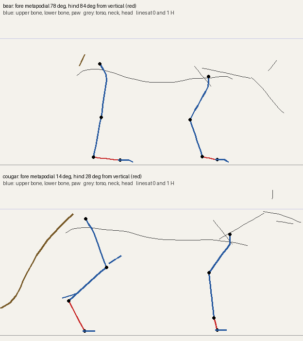
- Gaits and poses without a Muybridge bear. Bear gaits from force-plate biomechanics (a pace, never a trot), cougar gaits from Muybridge's cat and lions, keyframed poses (the pounce), paw targets in body coordinates (the climb), and the critic's list of poses that read as something else.
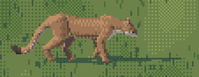
- Black fur is its own material. Why a standard hide palette paints a grey bear, and the four changes that make it black; the value board; and the opposite mistake on the cougar (right hue, too light).
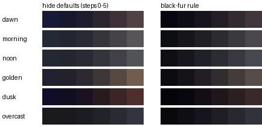
- Small figures, per species. Two glyph painters with different marks (the bear's muzzle pixel, the cougar's tail up-tick), debugging by printing glyphs as characters, and choosing the renderer-to-glyph handoff per animal with a side-by-side study.

- Predators in other students' paintings. Reading scale, sun and water off someone else's picture and code; borrowing a sibling student's code for the prey; families at true scale.
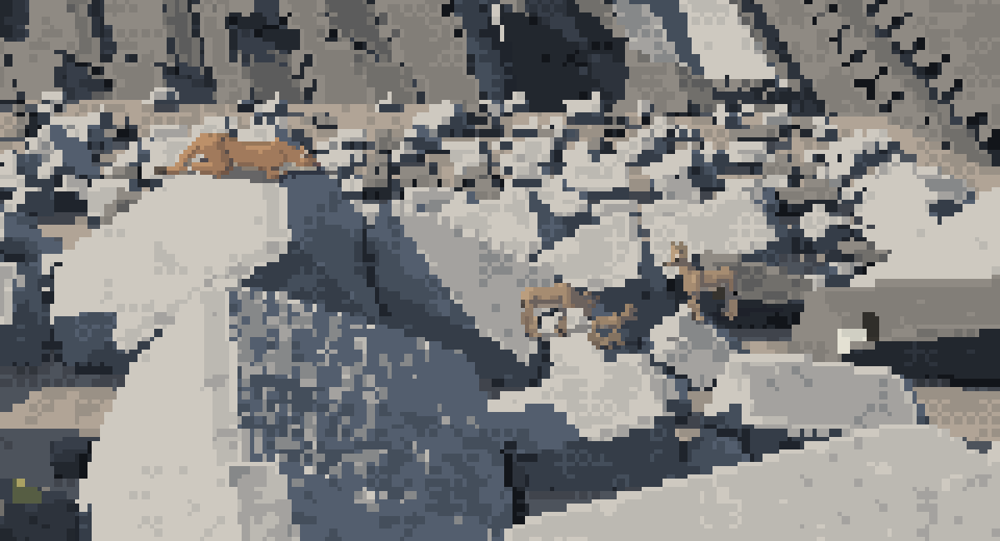
If you only have an hour
Read how-to 1 and go and find your animal's Seton. Then build the board. If your animal is black, read how-to 4 before you touch the palette.
The sheets
Every cell is one call of paint.paint_index with its parameters changed.
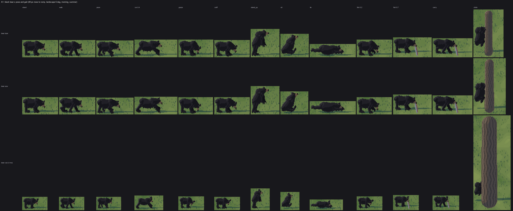
study, sheet A1. The black bear by pose and gait (48 px nose to rump; the cub at 30): stand, walk, pace, run, graze, sniff, stand up, sit, lie, fish with the paw raised, fish with a salmon, carry, climb.
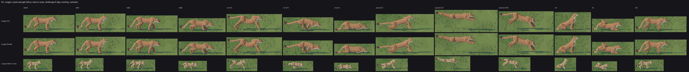
study, sheet A2. The cougar: stand, alert, walk, stalk, run (two phases), crouch, pounce (launch, flight, strike), sit, lie, trot. The kittens are spotted and ring-tailed.
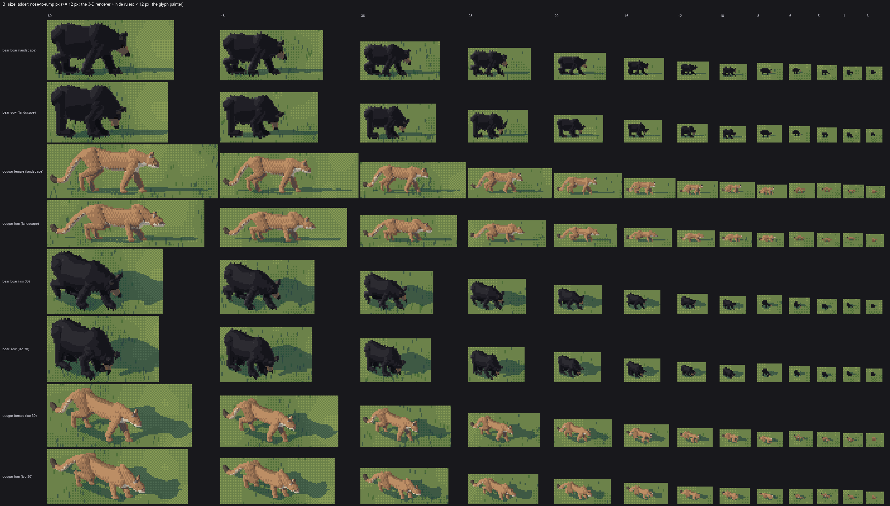
study, sheet B. 60 → 3 px, landscape and iso 30°.
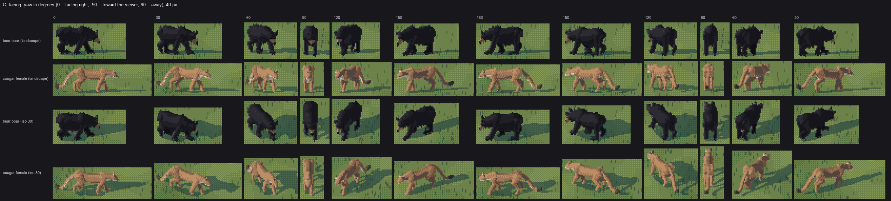
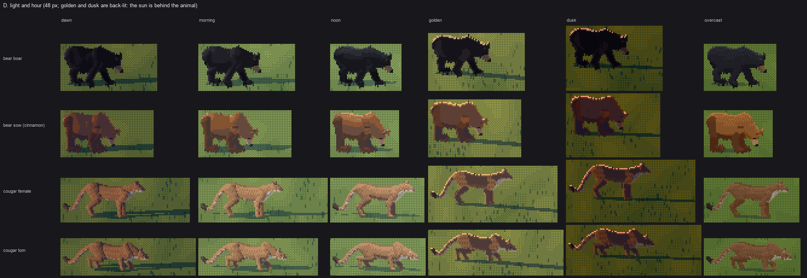
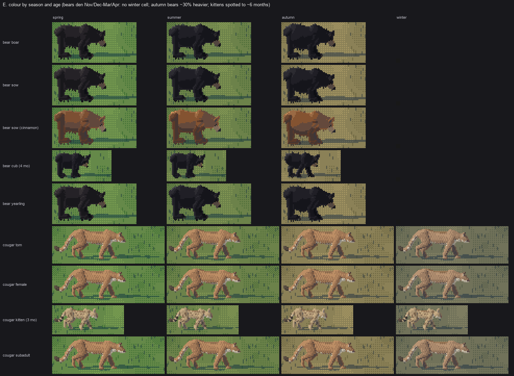
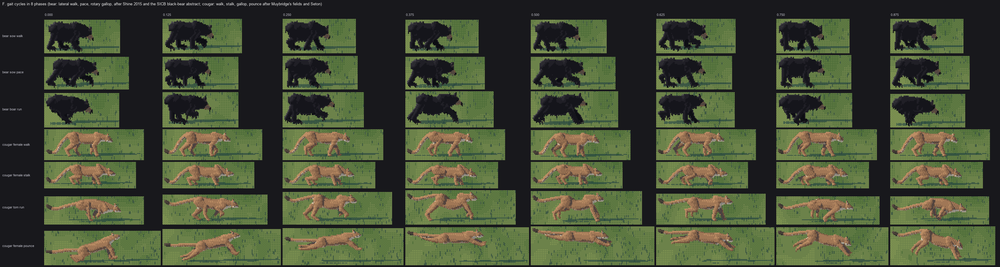

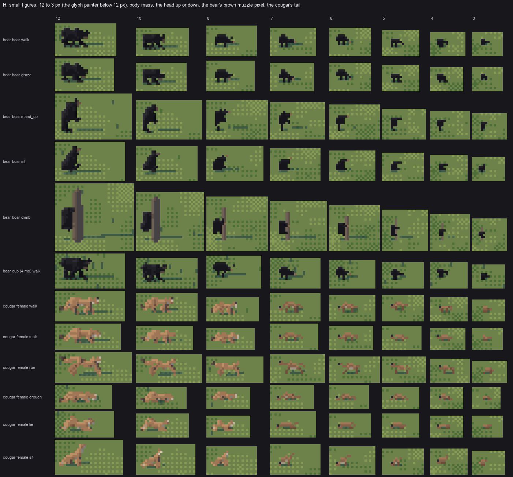
study, sheets C-H: twelve facings; six hours (golden and dusk back-lit); colour by season and age (no winter bear: they den); gait cycles in 8 phases; families at true relative scale; small figures from 12 to 3 px. (Sheet H's title says the glyph painter takes over "below 12 px"; that was true when I first drew it. The final handoff is 10 px for the bear and 8 for the cougar, how-to 5.)
GIFs from anim.py:


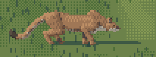
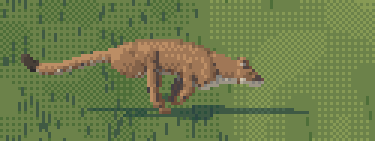
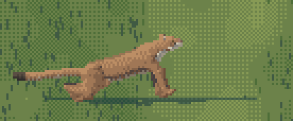
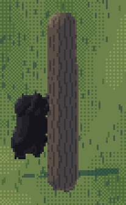
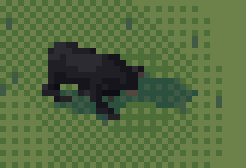
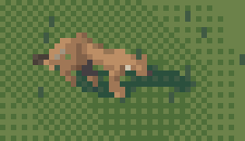
Running it
cd ~/work/pixelart-studies/elements/bear-cougar/src
nice -n 10 python3 sheets.py # sheets A-H (~25 min on 4 processes, on a busy laptop)
nice -n 10 python3 anim.py # the GIFs
nice -n 10 python3 context.py # rapid, dusk, ledge
python3 board.py notan|grey|colour|sizes TAG ; python3 valboard.py TAG 60
One animal is one call:
import rig, paint
from render import View
ind = rig.Individual("cougar", "f", "adult", season="autumn", seed=2)
# bear extras: phase_colour="black"|"brown"|"cinnamon"; young: months=4
R, tubes, k = paint.paint_index(ind, gait="stalk", phase=0.3,
view=View(yaw=-14, elev=8, sun_az=-150, sun_el=30),
size_px=48) # nose to tail root in px; or k= px per metre
rgb = paint.colour(R, ind, hour="golden", ground="autumn")
Gaits: bear stand walk pace run graze sniff sit stand_up lie fish carry climb alert; cougar stand alert walk stalk trot run sit lie crouch pounce.
The observation half, for the sim programmer (sizes, gaits, behaviours and colours, each with its source), is notes/observation.md in the study folder.
Where it stops
The bear reads at every size and in most poses. The cougar reads down to about 8 px, as a tawny mass with a small head and the J of its tail. Below 5 px it's a smudge. Its hero-size surface is smooth tubes where Seton draws muscle masses and loose skin. The climbing bear is a lump against a trunk. Head-on and tail-on views of both animals are weak. Each how-to ends with where its own part falls short.